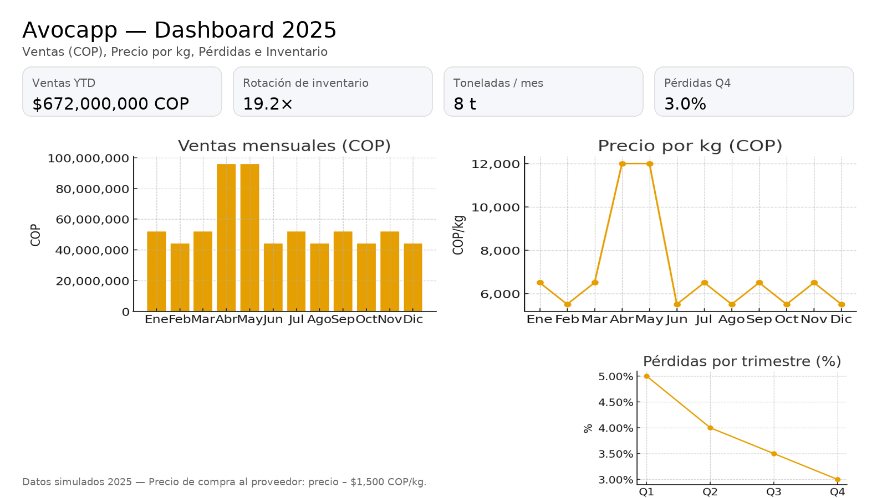

YeraMacr YeraMacr
YeraMacr YeraMacr
Limpieza y transformación de datos, control de calidad, modelado y definición de KPI. Dashboards con Power BI, Excel avanzado y SQL para decisiones claras y accionables.
Tableros ejecutivos con métricas clave, segmentaciones y filtros para seguimiento de desempeño.

Aplicativos para optimizar flujo de trabajo y presentación de información.
Aplicación en desarrollo para la gestión de inventario, ventas y reportes en el comercio mayorista de aguacate. Permite registrar entradas/salidas, generar reportes diarios y mostrar métricas visuales en paneles de control.